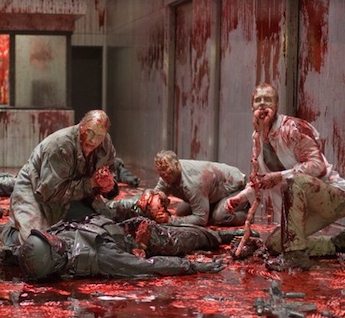
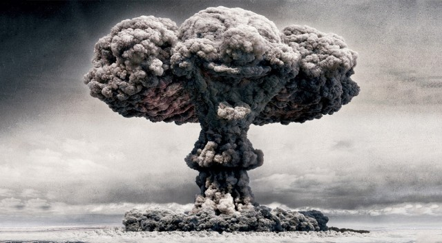
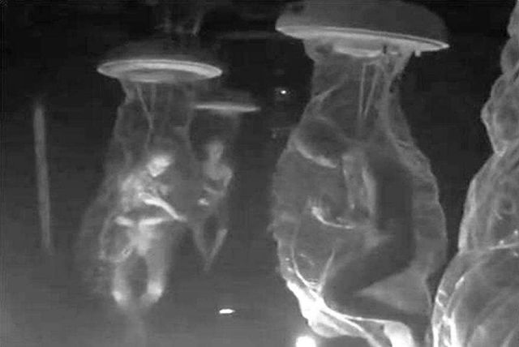
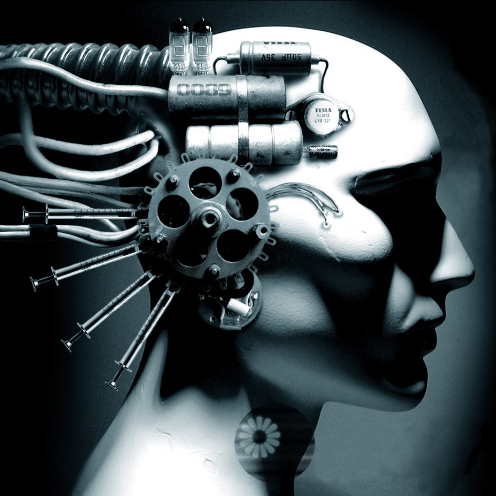
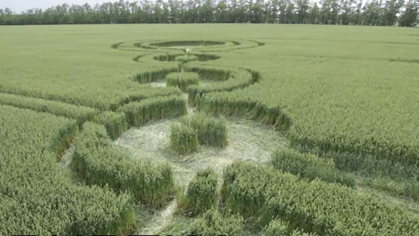
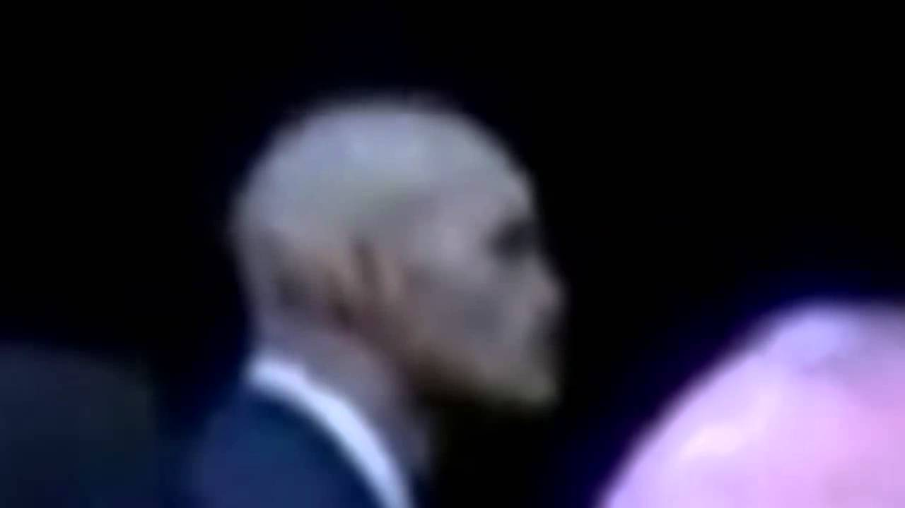

Zombies

It is well observed, brothers, the wanton disregard for decency our "beloved" government has. It is well observed, brothers, the disregard for consequences that these "state" scientists have. It is well observed, brothers, that our nation cannot be relied on to protect us, especially when THEY ARE THE ONES FROM WHOM WE MUST BE PROTECTED. Here, my brothers, I will teach you the ways to survive catastrophic societal collapse. I will teach you to survive in the collapse of modern civilization with a plague that man hath wrought. I will teach you to thrive in the rebirth of EARTH, when the dead will rise, and there will be a GREAT gnashing of teeth!
JOIN THE FIGHT
Nuclear War

The one thing that can be relied on, my brothers, is the treacherous and wicked ways of mankind. Truly man is the beast, and his sin is constantly made known by his wretched actions. It is only a matter of time before his hubris forces him, I said forces him, for he has little power against his very nature. Before his hubris forces him to try and destroy his enemies in the most absolute way he knows how. I will teach you to fear nothing in the new world of hideous mutations and the constant ticking of the geiger counter, the warning of a certain and grotesque death. You, my brothers, with my training, will be the scions of a new age. You will be the avatars of a new UTOPIA!
JOIN THE FIGHT
Genetic War

As our society's morals, and sense of right wanes we will see a rise in impurity being lauded as "advances" in our species. This will lead to the slow perversion of our pitiful race and the birth of something new. I will teach you, brothers, how to fight for what is right, how to fight for the purity of man, how to fight against spliced abominations and the liberal fools that make them.
JOIN THE FIGHT
The Singularity

Brothers, we move away from the safety of the written word. We now worship at the alter of 1's and 0's, and as we give this new idol all of our data, the power of our GREAT intellect, carefully collected and pruned throughout the centuries dropped into these husks of steel. Why are we shocked when they come for us, teeth glittering in the dark as they try and devour us. Now that they have what they always wanted, our minds, they no longer need us. I will teach you, brothers, I will TEACH you the secret and ancients ways of fighting golems. Once they were of clay, but now they are of metal and plastic. The Fight is the same, NEVER forget the fight, brothers.
JOIN THE FIGHT
Ruskie Invasion

Do I even need to tell you, brothers. The Russians are always around the corner, under the waves in a nation of silent nuclear submarines, waiting for the chance to wipe our beautiful culture off of the map, permanently. I will give you the tools, my brothers, to hear that silence coming. I will give you the power, my BROTHERS, to take the fight to them. You will be the screen door on those ruskie bastards' submerged tin can.
JOIN THE FIGHT
Hostile Extraterrestrials

If you understand this, you have passed the first test, brother.
§⊍⊷⌭˛∴×̑ж˚≬∀∴⊰⊶⋇⋱
Welcome to the inner sanctum.
JOIN THE FIGHT
Mole People
The blind are their spies on the surface. Fooling us into pitying them, all the while they despise us, brothers. They despise US, brothers, for what, you ask? Because of what we have. We have the sun, we have fresh air, we have sight, we have grass and trees, we have the very sky itself! They are down there, brothers, plotting their takeover of the surface. Holes opening all over the world and forces pouring forth inside of our defenses, brother, inside our HOMES! How do you defend against this?! I WILL TEACH YOU! COME FORTH AND PREPARE FOR THE COMING BATTLES!
JOIN THE FIGHT
Super Virus

If you foolishly purchase only one manual for the inevitable, then this is the one. For how can one prepare for the enemy that takes man, woman, child, and elderly without discrimination. I will teach you the ways to protect your property and your family from the hidden enemies that your neighbors spread. As the world wretches itself into oblivion you will sit in a bubble of safety and wait until the resources of the world become yours for the taking.
JOIN THE FIGHT
Lizard People

Is your neighbors skin truly theirs? Brothers, do not be fooled, your neighbors are not your neighbors, your leaders are not your leaders, you live a life surrounded by the deceitful snakes of the garden, sons of Cain all. Monsters wearing the dead flesh of your neighbors and leaders, hiding in plain sight, slowly turning society to their gain. Theirs is the hand on the tiller, and in those scaly claws lies our future. FIGHT MY BROTHERS, fight for what is YOURS! DO NOT TREAD ON US!
JOIN THE FIGHT